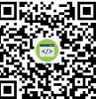

个人简历
求职意向：前端开发
教育经历/Education
广州大学计算机科学与网络工程学院 2017.09-2021.06
网络工程专业/本科
主修课程:程序设计基础、高等数学，离散数学、线性代数、数据结构、数据库原理、计算机组成
项目经验 /Experience
2018/07-2019/12 自然语言处理系统项目
工作岗位：广州大学计算机实验研究中心 语言处理系统研究助理
内容：负责自然语言处理系统的前端开发工作以及前后端框架搭建工作
2016/12-2017/12 广州大学校团委公众号网页设计
工作岗位：广州大学计算机实验研究中心 前端开发
内容：负责广州大学校团委组织新闻稿推送网页端网页设计和开发
2017/05-2017/07 广州大学生命科学学院项目简介设计
工作岗位：广州大学实验研究中心 前端开发
内容：完成广州大学生命科学学院项目简介信息的网页制作
实践经历 /Practice
2019/07—2019/08 美国华盛顿大学访学项目 访学成员
主要工作：通过考核和筛选，代表广州大学计算机学院到美国华盛顿大学参与为期半个月的“人工智能”访学项目，并获得优异成绩以及相关证书。
2018/09-2019/09 广州大学计算机学院团委学生会 服务部部长
主要工作： 负责广州大学特色项目“五室一站”的管理和建设，组织并策划了丰富的计算机义务维修活动。计算机专业知识讲座在年度考核中，我院负责的“五室一站”获得广州大学优秀单位称号。
2019/07 广州大学石围塘夏令营活动 志愿者
主要工作：志愿参与广大青协与荔湾区石围塘街联合举办的以青少年为活动对象的一系列趣味课程活动，认真教授水火箭制作课程、摄影大赛、网络画板等相关知识。
2017/9-2018/9 广州大学校团委新闻中心 公众号运营和维护者。
主要工作：参与校内举办的各类学术和心理讲座的新闻稿的撰写，公众号推文的排版编辑以及拍摄。
荣誉奖励 /Certificate
连续两年获得国家励志奖学金；
广州大学第十四届网页设计大赛决赛人气奖；
广州大学“优秀学生”荣誉称号；
广州大学“优秀学生干部”荣誉称号
自我评价 /Self-evaluation
工作认真仔细，逻辑思维、创新意识强，待人真诚，责任心强，有良好的团队合作精神。
热爱阅读，喜欢运动。
基础信息
联系方式

专业技能
后端语言有一定的了解；熟练掌握计算机网络相关知识
兴趣爱好
每天坚持跑步